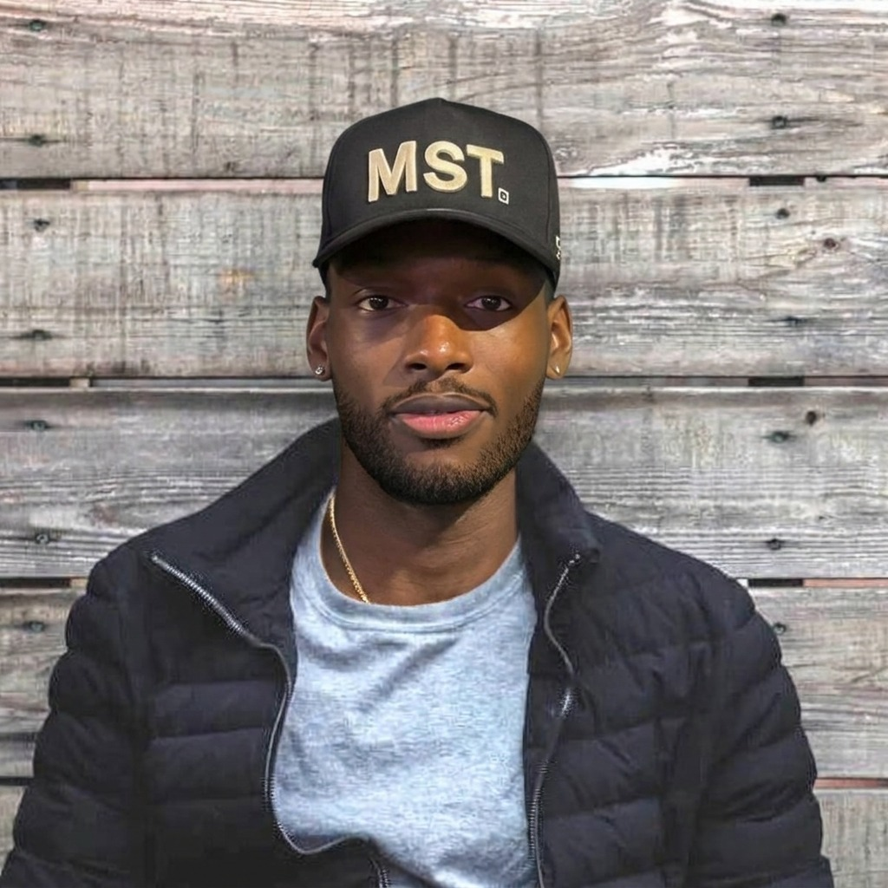

🎓
CESDE
Estudiante de Desarrollo de Software, enfocado en aprender los fundamentos necesarios para diseñar y construir programas.
Tengo 20 años, vivo en Medellín y estudio Desarrollo de Software en CESDE. Me interesa la tecnología, aprender cómo funcionan las herramientas digitales y desarrollar soluciones a través de la programación.

Mi nombre es Carlos Gomez, tengo 20 años y vivo en Medellín, Colombia. Actualmente soy estudiante de Desarrollo de Software en CESDE, donde estoy construyendo mis conocimientos y habilidades para abrirme camino en el mundo de la tecnología.
Me motiva aprender cosas nuevas, desarrollar el pensamiento lógico y encontrar formas de convertir ideas en soluciones. Considero que cada ejercicio y proyecto es una oportunidad para mejorar y ganar experiencia.
Mi formación en CESDE es el punto de partida para desarrollar conocimientos técnicos y prepararme para nuevos retos en el sector tecnológico.
Estudiante de Desarrollo de Software, enfocado en aprender los fundamentos necesarios para diseñar y construir programas.
Interés en fortalecer el razonamiento lógico, la solución de problemas y el pensamiento estructurado mediante código.
Disposición para explorar herramientas, practicar nuevos conceptos y mantenerme actualizado en el área del desarrollo.
Como estudiante, estoy en una etapa de aprendizaje y exploración de distintas áreas del desarrollo de software.
Crear sitios web claros, funcionales y adaptables, cuidando tanto su estructura como la experiencia de las personas que los utilizan.
Aprender lenguajes de programación y aplicar sus fundamentos para construir programas que resuelvan necesidades concretas.
Comprender cómo se almacena, organiza y consulta la información dentro de los sistemas informáticos.
Este espacio está pensado para mostrar los trabajos que vaya desarrollando durante mi formación.
Prácticas para desarrollar la lógica, comprender estructuras de control y aprender a organizar soluciones paso a paso.
Enfoque: fundamentos de desarrollo de software.Construcción de páginas como ejercicio para aprender a estructurar contenido y presentar información de forma organizada.
Enfoque: HTML, CSS y diseño adaptable.Este portafolio crecerá con nuevas prácticas, aplicaciones y proyectos que reflejen mis avances como estudiante.
Enfoque: aprendizaje y mejora continua.Mi objetivo es seguir aprendiendo, fortalecer mis habilidades y transformar los conocimientos adquiridos en proyectos que aporten valor.
Volver al inicio ↑